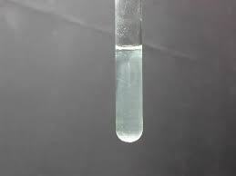
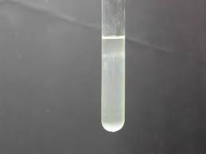

Premetto subito, avendola ripetuta più volte cocciutamente, che la preparazione di questo reattivo per il sodio è comunque di bassissima resa, con esiti nel mio caso mai andati completamente a buon fine.
Ecco come ho proceduto, come da fonte bibliografica:
-mescolare 5 g di ossido di antimonio Sb2O3 con 5 g di KOH e 5 ml di acqua.
Lasciare in riposo la pastella bianca, mescolando ogni tanto.
Se l'antimonio è un anfotero, lasciandolo così avvinghiato alla base forte formerà un po' di antimonito, K3SbO3.
Detto questo, l'ho lasciato in intimità con la potassa per una notte intera.
Il giorno successivo diluire con 90 ml di acqua e aggiungere 5,5 g di ossido di rame CuO come ossidante per portare l'antimonio da Sb3+ a Sb5+.
Portare all'ebollizione per un paio d'ore; per evitare l'evaporazione, ho collegato un refrigerante a ricadere, come in una sintesi organica.
Filtrare per ottenere un soluzione limpida; ritenevo l'operazione difficile e invece si filtra con facilità.
Evaporare poi per ebollizione ad un decimo del volume iniziale.
Conservare così com'è una porzione di questa soluzione perchè qui cominciano i veri problemi, che non sono riuscito a risolvere in nessuna maniera.
L'autore della procedura a questo punto dice di lasciar raffreddare ed aggiungere un egual volume di etanolo: mescolando si otterrà un precipitato viscoso aderente alle pareti del recipiente.
Raffreddare e filtrare, lavando sul filtro con etanolo al 50%.
Seccare velocemente all'aria e polverizzare la massa bianca.
Ho ripetuto più volte queste operazioni, volte a separare l'eccesso di KOH residua dal composto dell'antimonio, ma non riuscendo mai ad ottenere alla fine un composto solubile; sembra che tutto idrolizzi con estrema facilità ed in ambiente anche solo neutro si forma sempre un precipitato fioccoso.

Precipitato fioccoso (acido antimonico?) che si forma in varie fasi della sperimentazione con il piroantimoniato.
Questo NON è il piroantimoniato sodico, del tutto diverso.
Seccando il prodotto si ottiene una polvere del tutto insolubile ed inutile.
Dopo molte prove, per il test del sodio ho quindi utilizzato la soluzione contenente ancora parecchio KOH, senza più tentare la purificazione con etanolo.
Il "piroantimoniato di potassio" era considerato fino agli anni '50 come il sale acido di potassio dell'acido piroantimonico KH2Sb2O7; successivamente si è visto che in realtà si tratta di un ortoantimoniato idrato KH2SbO4.2H2O, assimilabile all'acquacomplesso K[Sb(OH)6]; quest'ultimo per termolisi dà il vero piroantimoniato (ma che non è il reattivo per il sodio):
2 K[Sb(OH)6 --> K2H2Sb2O7 + 5 H2O
Infine ecco raggiunto in questo paio di fotografie qui sotto lo scopo di tutto questo accidente di lavoraccio (soprattutto bibliografico e di spreco materiali): vedere una soluzione di cloruro di sodio che precipita con un reagente!

Prova in bianco: soluzione molto diluita di piroantimoniato; si nota comunque un principio di idrolisi, nonostante la forte alcalinità residua.

Aggiunta di sol. di NaCl: prec. microcristallino: finalmente!
La precipitazione dello ione sodio non è immediata ma richiede un certo tempo e avviene meglio con il classico sfregamento delle pareti della provetta con una bacchetta di vetro; dopo qualche tempo si osserva il piroantimoniato di sodio sotto forma di un caratteristico precipitato microcristallino, che forma l'opalescenza che si vede nell'immagine.
Bello vero? Bah, quelle buon'anime di Delacroix, Berzelius, Knorre, Olschewski, Fremy potevano pur darmi la soddisfazione di ottenere un po' di polvere pura da mettere via... niente!
Ma va bene lo stesso: il sodio venir giù l'ho visto, e tanto me lo faccio bastare.